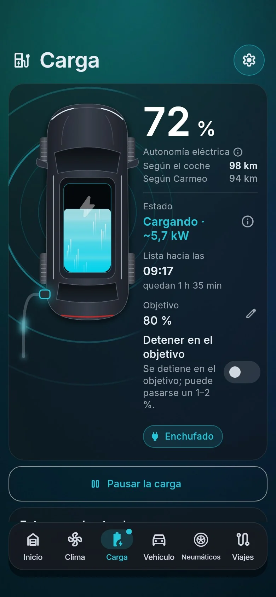
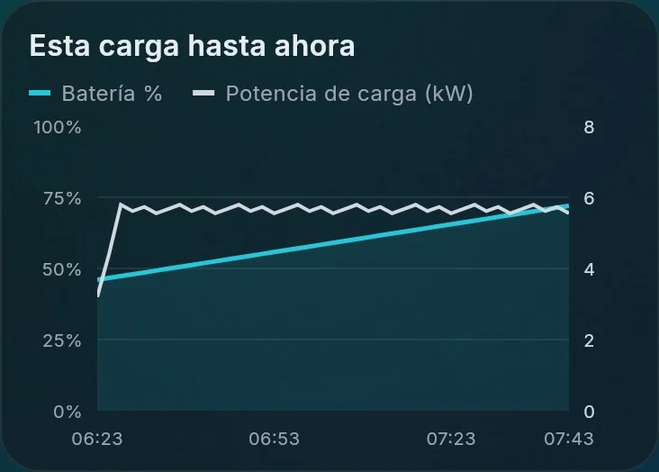
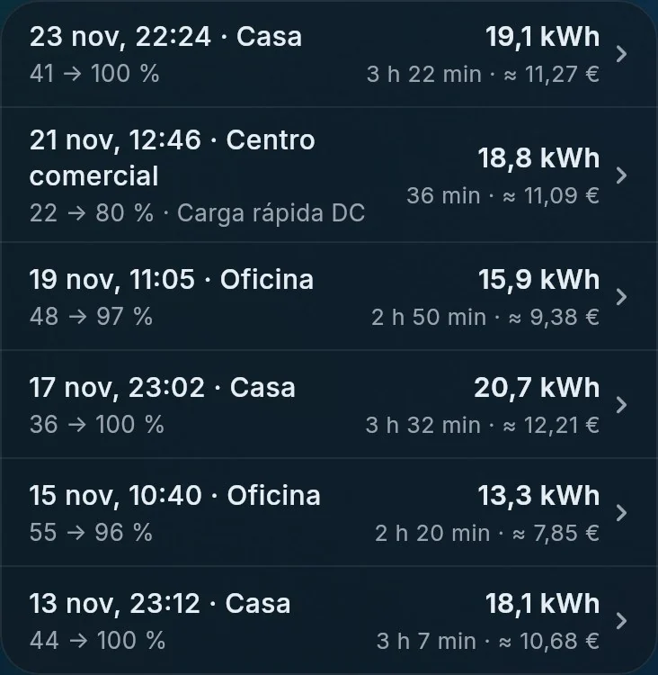
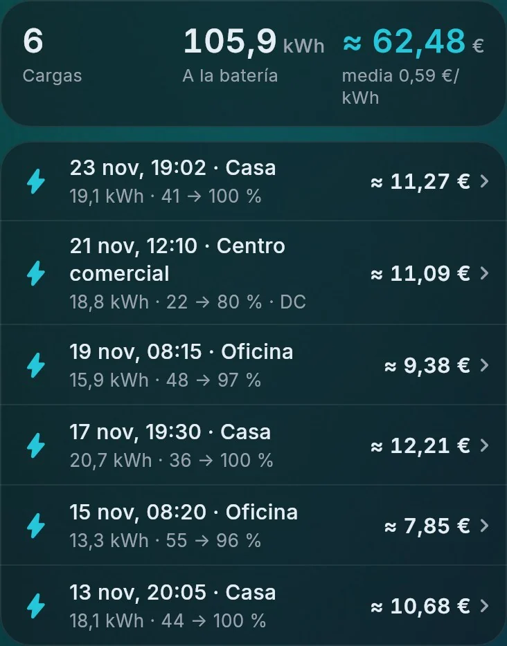

Carga
Conoce en todo momento cómo va tu carga.
Potencia en tiempo real en kW, el tiempo restante y cada carga en un registro – en casa con el wallbox o en un cargador público.


Potencia en tiempo real y tiempo restante, en la pantalla de inicio.
En cuanto el coche empieza a cargar, la pantalla de inicio muestra el nivel de batería, el tiempo restante, a qué hora terminará y la potencia de carga. El tiempo restante también aparece en las cargas DC, calculado hasta el objetivo que hayas fijado.
- Potencia en kW – la energía que entra en la batería. Un wallbox marca un 10–15 % más, por las pérdidas de carga.
- Se actualiza cada 2 minutos – mientras el coche carga.
- Un aviso – cuando la carga ha terminado.


Primero la curva en tiempo real, después el registro.
Mientras carga, el % de batería y los kW dibujan una curva en tiempo real. Después, cada carga queda en el registro: fecha, lugar, batería de–a, energía añadida, duración y coste, AC o DC. También ves la programación de carga del coche, y puedes detener una carga desde la app si tu coche lo permite. Si indicas las pérdidas de carga de tu coche (Ajustes → Coche → Precios), el coste de una carga cuenta la energía tomada de la red – y puedes introducir los kWh que ha medido tu wallbox. Se pueden introducir los kWh del propio cargador – el coste se ajusta a ellos; además, una estimación de la capacidad útil de la batería y de la autonomía de mañana por la mañana con frío. Cargar ahora: un coche enchufado que espera su horario carga al momento y después vuelve a su horario. Horario inteligente (opcional): con una tarifa de dos periodos, en el tramo barato y listo para salir.

Mes a mes, listo para exportar.
El informe mensual suma cada carga por lugar – energía, coste y precio medio por kWh – y lo exporta en CSV o PDF.

Síguela sin abrir la app.
En iPhone la carga aparece como Live Activity en la pantalla de bloqueo y en la Dynamic Island. En Android se muestra como una notificación en tiempo real. Los widgets mantienen a la vista el nivel de batería.
- Cargado hasta tu objetivo – desenchufa cuando quieras.
- Se ha parado antes – la carga se detuvo antes de tu objetivo con el cable todavía puesto.
- Enchufado, pero sin cargar – el cable está puesto y no pasa nada.
Pruébala en tu propio coche.
Carmeo es gratis. Únete al grupo de prueba abierta en iPhone o Android.